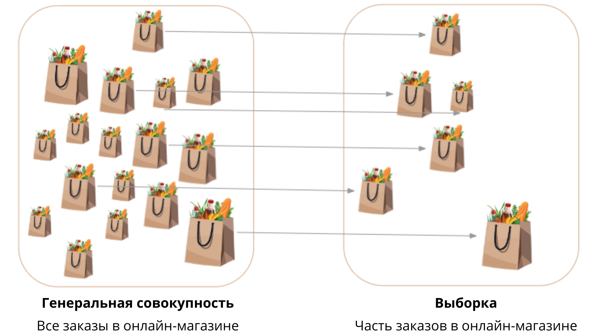
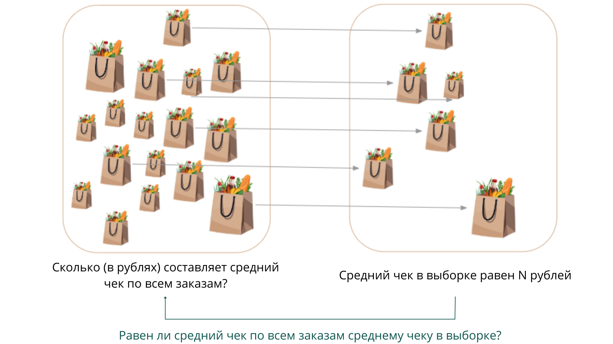
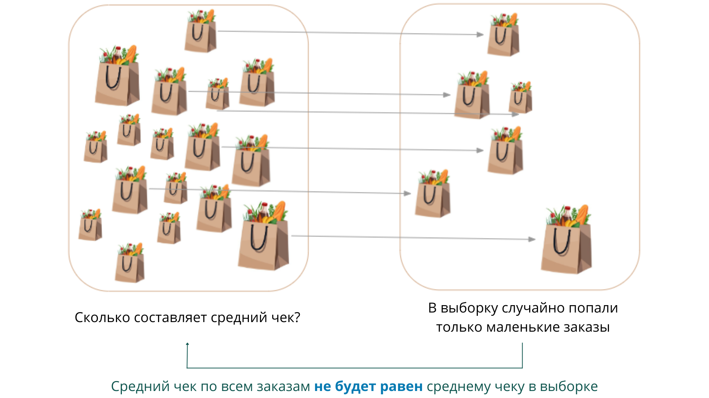

Несмотря на то что статистические тесты часто используют для принятия бизнес-решений, всё же бывают ситуации, когда обращаться к ним необязательно. О таких ситуациях мы поговорим отдельно в конце модуля.
В этом и последующих юнитах мы рассмотрим случаи, когда без статистических тестов не обойтись. Для начала введём понятия «генеральной совокупности» и «выборки» — они пригодятся нам в дальнейших рассуждениях.
Генеральной совокупностью называется всё множество интересующих нас объектов, а выборкой — случайное подмножество этого множества.
Часто множество объектов генеральной совокупности настолько большое, что мы не можем посчитать все объекты. Например, все заказы в онлайн-магазине — это генеральная совокупность, а часть заказов — выборка. Мы не можем посчитать все заказы как минимум потому, что часть из них ещё не совершена.

Мы уже знаем, что на основе выборки (части наблюдений) можно измерить следующие показатели:
- выборочное среднее (центральная мера распределения);
- выборочное стандартное отклонение (мера разброса);
- выборочная пропорция.
Однако на самом деле нас всегда интересуют параметры генеральной совокупности:
- истинное среднее — математическое ожидание (, «мю»);
- истинное стандартное отклонение (, «сигма»);
- истинная пропорция ().
Например, если речь идёт о среднем чеке заказов в онлайн-магазине, то нам важно узнать его не на выборке, а на всех заказах, то есть на генеральной совокупности.
Важно помнить о разнице между выборочными статистиками и параметрами генеральной совокупности.
Выборочная статистика — это случайная величина, так как рассчитана на случайной выборке. Например, значение среднего на двух разных выборках будет разным.
Параметр генеральной совокупности — это константа, конкретное число, которое, как правило, нам неизвестно и никогда не станет известным.
Однако благодаря статистическим тестам мы можем делать выводы о параметрах всей генеральной совокупности, имея только выборку наблюдений.
Как это можно сделать? Давайте разбираться.
Допустим, мы хотим увеличить средний чек заказа в онлайн-магазине, внедрив новую рекомендательную систему. Команда Data Science должна оценить, насколько эффективно будет работать эта система. Запускать её для всех покупателей и после этого анализировать эффективность рискованно, так как требует вложения средств. Система может оказаться неэффективной, и её массовое внедрение может привести к репутационным издержкам.
Как тогда поступить?
Выходом будет:
- Показать рекомендации только части покупателей (выборке).
- Замерить средний чек на полученной выборке (пусть он получится равным рублей).
- Провести статистическое тестирование, чтобы проверить значимость полученного результата для всей генеральной совокупности. То есть мы должны понять, есть ли разница в средних чеках по всем заказам (математических ожиданиях) до и после внедрения рекомендательной системы.
- Сделать вывод, запускать ли рекомендательную систему на весь магазин.

Почему нельзя просто сделать вывод, что если средний чек в выборке равен рублей, то он также будет равен рублей на всех заказах? Потому что, возможно, значения, полученные на выборке, не отражают значения на генеральной совокупности. Например, на рисунке ниже средний чек заказов в выборке меньше, чем средний чек по всем заказам.

- Если бы мы запустили рекомендательную систему сразу на всех покупателей онлайн-магазина, то узнали бы, эффективна ли она, без статистических тестов, так как измерили бы все объекты в генеральной совокупности. Однако в случае неэффективности системы было бы уже поздно что-то менять, так как ресурсы компании уже потрачены на её внедрение.
- Если бы мы запустили рекомендательную систему только для части покупателей, но не провели статистические тесты, полученные выводы нельзя было бы распространить на все заказы.
Резюмируем:
- Статистические тесты позволяют сделать выводы о всей генеральной совокупности по выборке.
- Статистические тесты нужны в случаях, когда мы не можем измерить все объекты в генеральной совокупности.
- Без статистических тестов выводы, полученные на выборке, нельзя распространить на всю генеральную совокупность.